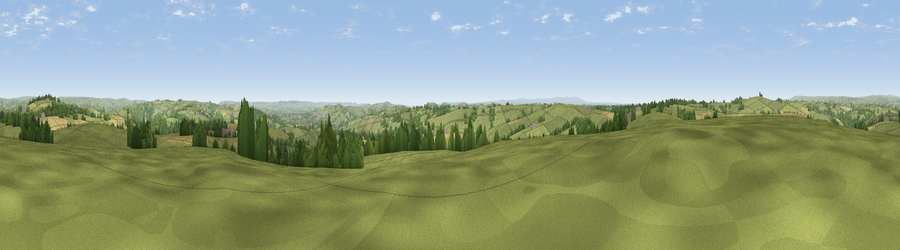

Viewpoint near Loxbeare
#9519 in England · top 11% of its area beats it · near LoxbeareThe view, rendered

A 360° render of this exact spot computed from the terrain model, tree cover and land cover — summer colours, afternoon light, calibrated against photographs of famous viewpoints. Real trees, hedges and buildings will differ in detail.
The panorama
Grey silhouette: terrain skyline in each direction (720 bearings, Earth curvature and refraction included). Dashed green: skyline with trees (+15 m) and buildings (+8 m) as obstacles. Blue strip: how far the ground is visible on each bearing.
Where the view opens
Wedge length = distance to the farthest visible ground on that bearing (vegetation-aware). Rings at 10, 25 and 50 km.
What fills the view
72% grassland · 15% woodland · 12% cropland · 1% built-up
Angular shares of the visible panorama (visual magnitude), not map area. Landscape diversity 0.36 (0–1 Shannon).
Key numbers
More beautiful places nearby
The staircase of upgrades: each row has a higher view potential than everything closer. Driving times are estimates from straight-line distance, calibrated against real road routing — check an actual route before setting out.
| Place | Direction | Drive | Score |
|---|---|---|---|
| Stoodleigh Beacon | WNW · 3 km | ~7 min | 66.7 |
| Viewpoint near Stockleigh Pomeroy | S · 12 km | ~22 min | 69.7 |
| Cadbury Castle | S · 12 km | ~22 min | 73.7 |
| Fursdon Hill | S · 12 km | ~23 min | 76.2 |
| Raddon Hills | S · 14 km | ~25 min | 78.2 |
| Viewpoint near Stockleigh Pomeroy | S · 14 km | ~25 min | 78.9 |
| Viewpoint near Roadwater | NNE · 22 km | ~37 min | 82.9 |
| Viewpoint near Roadwater | NNE · 24 km | ~39 min | 85.2 |
50.94231, -3.55407 · source: screening · position refined by local search. Computed location — check access rights before visiting.